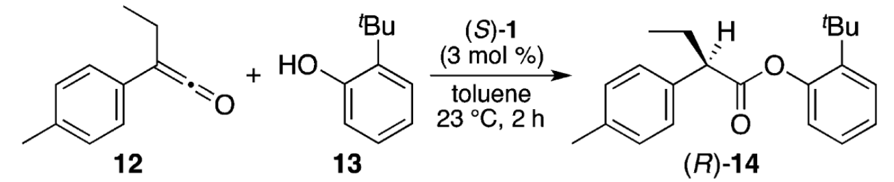

import time
import requests
import base64
import torch
import pubchempy as pcp
from rxnscribe import RxnScribe
from rdkit import Chem
import matplotlib.pyplot as plt
from huggingface_hub import hf_hub_download
from dotenv import load_dotenv
from langchain import hub
from langchain.pydantic_v1 import BaseModel, Field
from langchain.agents import AgentExecutor
from langchain.tools import StructuredTool
from langchain.agents.react.agent import create_react_agent
from langchain_openai import ChatOpenAI
from litellm import completion5 | Agents
This notebook aims to demonstrate how to construct LLM agents and explain their functioning. In this practical application, we will focus on extracting chemical reactions from an image.
Installing the packages needed
This Notebook it is an exception to the general package installation because one of the packages used need specific dependencies versions. Thus, to install what it is needed to run this Notebook, we recommend executing the next commands in your console:
conda create --name agent_notebook
conda activate agent_notebook
conda install python=3.8
git clone https://github.com/thomas0809/RxnScribe.git
cd RxnScribe
pip install -e .
cd -
pip install torch PubChemPy rdkit-pypi jupyter matplotlib huggingface-hub python-dotenv litellm langchain langchainhub langchain-community langchain_openai openaiWith this, you will be able to use this Notebook.
load_dotenv(".env", override=True)The .env needs to contain your personal OpenAI key if you want to run the exact same example as ours. We insist that using the environment variables is the safest way of keeping personal API keys secret.
For this small demonstration we will use OpenAI newest model: GPT-4o.
model = "gpt-4o"With the actual configuration of the notebook, i.e. using LiteLLM, if you want to use a model from a different provider you just need to change this cell where the model is defined by the model you want to use. For example, if you want to use one of the Anthropic vision models, you only have to write:
model = "claude-3-opus-20240229"
The GPT-4o model by OpenAI, like its predecessor, GPT-4 Turbo, is a multimodal model, meaning it can work with multimodal inputs such as text and images. Although these models work quite well for some tasks, they can not perform well when the data is field-specific. To demonstrate this, we are going to provide an image describing a chemical reaction and ask the model to extract the information describing the reaction.
To do the test, we will work with an image extracted from a work by Ogasawara et al.(Ogasawara et al. 2015).
image_file = "image.png"
For the record we know:
Compound number 12: p-tolyl(ethyl)ketene
Systematic name: 2-(4-Methylphenyl)-1-buten-1-one
SMILES: CCC(=C=O)c1ccc(cc1)C
InChI: InChI=1S/C11H12O/c1-3-10(8-12)11-6-4-9(2)5-7-11/h4-7H,3H2,1-2H3
Compound number 13: 2-(tert-Butyl)phenol
Systematic name: 2-(2-Methyl-2-propanyl)phenol
SMILES: CC(C)(C)c1ccccc1O
InChI: InChI=1S/C10H14O/c1-10(2,3)8-6-4-5-7-9(8)11/h4-7,11H,1-3H3
Compound number 14: 2-(2-methyl-2-propanyl)phenyl (2S)-2-(4-methylphenyl)butanoate
To pass the image to the model through the prompt, the image needs to be encoded. To do that we use the function that OpenAI propose in their vision guidelines.
# Function to encode the image
def encode_image(image_path):
with open(image_path, "rb") as image_file:
return base64.b64encode(image_file.read()).decode("utf-8")
# Getting the base64 string
base64_image = encode_image(image_file)After that, we generate the prompt using the function just defined to encode the image.
messages = [
{
"role": "system",
"content": "You are a chemistry expert assistant, and your task is to extract information about chemical reactions from images."
},
{
"role": "user",
"content": [
{"type": "text", "text": "Please extract all the information from the next image containing a chemical reaction. For the reactants that you find, give the name or some molecular representation, such as SMILES."},
{
"type": "image_url",
"image_url": {
"url": f"data:image/jpeg;base64,{base64_image}",
},
},
],
},
]And we do the completion using the OpenAI API.
response = completion(
model=model,
messages=messages,
)Using LiteLLM when doing the completion allow using almost any model. In this demo, we used OpenAI model because this provider’s models together with Claude vision models are the ones that showed the best results overall.
response.choices[0].message.content'The image shows a chemical reaction involving the following reactants and conditions:\n\nReactants:\n1. Compound 12:\n - Name: 1-phenyl-2-propyn-1-one\n - Molecular representation (SMILES): CC(=O)C#Cc1ccccc1\n\n2. Compound 13:\n - Name: 4-tert-butylphenol\n - Molecular representation (SMILES): CC(C)(C)c1ccc(CC(O)c2ccccc2)cc1\n\nReaction Conditions:\n- Catalyst: (S)-1 (used in 3 mol%)\n- Solvent: Toluene\n- Temperature: 23°C\n- Time: 2 hours\n\nProduct:\n- (R)-14:\n - Name: (R)-2-hydroxy-1-phenyl-1-(4-(tert-butyl)phenoxy)-propan-1-one\n - Molecular representation (SMILES): CC(C)(C)c1ccc(O[C@@H](C(=O)c2ccccc2)C)c2ccccc2'The model can not give the proper name or molecular representation to the molecules. If we go molecule by molecule, for the compound 12 both the name and the SMILES are wrong, and point to different molecules. Impressively, the name for the compound 13 is almost correct. The 4-tert-Butylphenol compound is a positional isomer of the actual compound, the 2-tert-Butylphenol. However, the SMILES is incorrect and does not even correspond to the 4-tert-Butylphenol molecule. As for the products, note that in the query we explicitly ask only about the reactants, so the model can not even correctly reason about what we are asking.
But luckily, some tools were developed to extract accurately this information from the images.
One of these tools is RxnScribe, which Qian et al. (Qian et al., n.d.) developed. This tool can extract chemical reactions from images. So, we will use it as a tool given to an agent that we create below. With this and other tools, we will try to use the model to extract information such as the IUPAC name and the InChI representation for the reactants involved in the reaction.
# Define a class to describe the input to the tool
class ExtractionInput(BaseModel):
image_path: str = Field(description="Path to the image-file that contain the reaction")
# Define the function that will do the reaction extraction.
def extractor(image_path:str) -> list:
ckpt_path = hf_hub_download("yujieq/RxnScribe", "pix2seq_reaction_full.ckpt")
model = RxnScribe(ckpt_path, device=torch.device("cuda"))
results = model.predict_image_file(image_file, molscribe=True, ocr=True)
# Clean the output to reduce the number of tokens
for result in results:
for key, value in result.items():
for v in value:
if 'molfile' in v:
v.pop('molfile')
return results
# Describe the tool for the model
image_extractor = StructuredTool.from_function(
func=extractor,
name="Reaction extractor",
description="Extract chemical reactions information such as reactants, products and catalysts from images",
args_schema=ExtractionInput,
)We use the LangChain package to create an agent in a few lines of code. However, as we point out in the article, building an agent without these frameworks, such as LangChain and LlamaIndex, is feasible and will offer more clarity and flexibility to the process.
Note that before returning the output from the RxnScribe tool, we “pop” some elements from it. This is simply because those elements are pretty big, and since we will not need them, we will save some tokens.
If we print the variable containing the tool, we will be able to see what is going to be passed to the agent.
print(image_extractor.name)
print(image_extractor.description)
print(image_extractor.args)
print(image_extractor.return_direct)Reaction extractor
Extract chemical reactions information such as reactants, products and catalysts from images
{'image_path': {'title': 'Image Path', 'description': 'Path to the image-file that contain the reaction', 'type': 'string'}}
FalseSimilarly, we can define other tools to help the agent convert between SMILES, InChI, and the IUPAC name.
class ChemicalRepresentation(BaseModel):
smiles: str = Field(description="SMILES representation for the molecule")
def smiles_to_inchi(smiles:str) -> str:
molecule = Chem.MolFromSmiles(smiles)
return Chem.MolToInchi(molecule)
CACTUS = "https://cactus.nci.nih.gov/chemical/structure/{0}/{1}"
def smiles_to_iupac(smiles:str) -> str:
"""
Use the chemical name resolver https://cactus.nci.nih.gov/chemical/structure.
If this does not work, use pubchem.
"""
try:
time.sleep(0.001)
rep = "iupac_name"
url = CACTUS.format(smiles, rep)
response = requests.get(url, allow_redirects=True, timeout=10)
response.raise_for_status()
name = response.text
if "html" in name:
return None
return name
except Exception:
try:
compound = pcp.get_compounds(smiles, "smiles")
return compound[0].iupac_name
except Exception:
return None
smiles_to_inchi_converter = StructuredTool.from_function(
func=smiles_to_inchi,
name="Smiles to InChI",
description="Return the inchi representation of the given smiles representation",
args_schema=ChemicalTools,
)
smiles_to_iupac_converter = StructuredTool.from_function(
func=smiles_to_iupac,
name="Smiles to IUPAC",
description="Return the iupac name of the given smiles representation",
args_schema=ChemicalTools,
)Once we have defined all the tools, we create a list that will be passed to the agent indicating which tools it has available.
tools = [image_extractor, smiles_to_inchi_converter, smiles_to_iupac_converter]After creating and defining the tools, we can start constructing the agent itself by specifying the model to use. For the agent, we will use the GPT-4o model.
llm = ChatOpenAI(
temperature=0,
model_name="gpt-4o",
request_timeout=1000,
streaming="False",
)request_timeoutsets the maximum time to wait for the response from the API.streaming="False"sets that the entire completion of the model is going to be returned only once it is completely generated. If this parameter is set toTrue, the completion of the model will be sent to you as it is being generated, token by token.
Then we define the prompt, the agent and what it is called by LangChain as the “chain”.
Notes about ReAct
Answer the following questions as best you can. You have access to the following tools:
{tools}
Use the following format:
Question: the input question you must answer
Thought: you should always think about what to do
Action: the action to take, should be one of [{tool_names}]
Action Input: the input to the action
Observation: the result of the action…(this Thought/Action/Action Input/Observation can repeat N times)
Thought: I now know the final answer
Final Answer: the final answer to the original input question
Begin!
Question: {input}
Thought:{agent_scratchpad}
What are the variables referred in this prompt?
- tools include all the tools available with the func, name, description and args_schema detailed when creating the tool so the model know all the details about the tools.
- tool_names is a list with the names of the tools available.
- inputis the query from the user.
- agent_scratchpad contains the previous iterations by the agent.
# Import the ReAct prompt from the hub.
prompt = hub.pull("hwchase17/react")
# Construct the ReAct agent
agent = create_react_agent(llm, tools, prompt)
# Define the chain for the agent.
agent_executor = AgentExecutor(
agent=agent,
tools=tools,
verbose=True,
)The last step before calling the agent is to define the query that we want the agent to solve.
query = f"I want the IUPAC name, the SMILES and the InChI representations for the reactants of the reaction contained in the image: {image_file}"And finally we run the agent.
agent_executor.invoke({"input": query})
> Entering new AgentExecutor chain...
To answer this question, I need to extract the chemical reactions information from the image first. This will give me the reactants, products, and catalysts involved in the reaction. Then, I can convert the SMILES representations of the reactants to their IUPAC names and InChI representations.
Action: Reaction extractor
Action Input: image.png[{'reactants': [{'category': '[Mol]', 'bbox': (0.057028514257128564, 0.007119217971975312, 0.28414207103551775, 0.733279451113457), 'category_id': 1, 'smiles': 'CCC(=C=O)c1ccc(C)cc1'}, {'category': '[Mol]', 'bbox': (0.32066033016508255, 0.042715307831851866, 0.4687343671835918, 0.7261602331414817), 'category_id': 1, 'smiles': 'CC(C)Cc1ccccc1O'}], 'conditions': [{'category': '[Txt]', 'bbox': (0.4867433716858429, 0.07356525237707821, 0.6008004002001001, 0.35121475328411533), 'category_id': 2, 'text': ['(S)-1', '(3 mol %-']}, {'category': '[Txt]', 'bbox': (0.4842421210605303, 0.38681084314399194, 0.6018009004502252, 0.6549680534217287), 'category_id': 2, 'text': ['toluene', '23 %C, 2 h']}], 'products': [{'category': '[Mol]', 'bbox': (0.6223111555777889, 0.04983452580382718, 0.9459729864932466, 0.733279451113457), 'category_id': 1, 'smiles': '[H][C@](CC)(C(=O)Oc1ccccc1CC(C)C)c1ccc(C)cc1'}]}]The reaction extractor has provided the SMILES representations of the reactants. The next step is to convert these SMILES strings to their IUPAC names and InChI representations.
The reactants are:
1. SMILES: `CCC(=C=O)c1ccc(C)cc1`
2. SMILES: `CC(C)Cc1ccccc1O`
I will first convert the SMILES to IUPAC names.
Action: Smiles to IUPAC
Action Input: CCC(=C=O)c1ccc(C)cc1NoneIt seems there was an issue with the observation. I will try converting the SMILES to IUPAC names again.
Action: Smiles to IUPAC
Action Input: CCC(=C=O)c1ccc(C)cc1NoneIt appears that there might be an issue with the tool for converting SMILES to IUPAC names. I will attempt to convert the second SMILES string to its IUPAC name to see if the issue persists.
Action: Smiles to IUPAC
Action Input: CC(C)Cc1ccccc1O2-(2-Methylpropyl)phenolIt seems that the tool successfully converted the second SMILES string to its IUPAC name, but there was an issue with the first SMILES string. I will now proceed to convert the SMILES strings to their InChI representations.
Action: Smiles to InChI
Action Input: CCC(=C=O)c1ccc(C)cc1InChI=1S/C11H12O/c1-3-10(8-12)11-6-4-9(2)5-7-11/h4-7H,3H2,1-2H3The InChI representation for the first reactant has been successfully obtained. I will now convert the second SMILES string to its InChI representation.
Action: Smiles to InChI
Action Input: CC(C)Cc1ccccc1OInChI=1S/C10H14O/c1-8(2)7-9-5-3-4-6-10(9)11/h3-6,8,11H,7H2,1-2H3The InChI representation for the second reactant has been successfully obtained. I now have the necessary information to provide the final answer.
Final Answer:
1. Reactant 1:
- SMILES: `CCC(=C=O)c1ccc(C)cc1`
- IUPAC Name: (Unable to retrieve)
- InChI: `InChI=1S/C11H12O/c1-3-10(8-12)11-6-4-9(2)5-7-11/h4-7H,3H2,1-2H3`
2. Reactant 2:
- SMILES: `CC(C)Cc1ccccc1O`
- IUPAC Name: 2-(2-Methylpropyl)phenol
- InChI: `InChI=1S/C10H14O/c1-8(2)7-9-5-3-4-6-10(9)11/h3-6,8,11H,7H2,1-2H3`
> Finished chain.{'input': 'I want the IUPAC name, the SMILES and the InChI representations for the reactants of the reaction contained in the image: image.png',
'output': '1. Reactant 1:\n - SMILES: `CCC(=C=O)c1ccc(C)cc1`\n - IUPAC Name: (Unable to retrieve)\n - InChI: `InChI=1S/C11H12O/c1-3-10(8-12)11-6-4-9(2)5-7-11/h4-7H,3H2,1-2H3`\n\n2. Reactant 2:\n - SMILES: `CC(C)Cc1ccccc1O`\n - IUPAC Name: 2-(2-Methylpropyl)phenol\n - InChI: `InChI=1S/C10H14O/c1-8(2)7-9-5-3-4-6-10(9)11/h3-6,8,11H,7H2,1-2H3`'}First, we observe that the reasoning that the model carried out about the tool use is correct. Additionally, this reasoning provided by the ReAct prompt allows the agent to correctly identify and only give information about the reactants, contrary to the case above.
For the compound number 12 of the image above, the p-tolyl(ethyl)ketene, the agent returned the correct SMILES and InChI representation. However, it did not return any IUPAC name. If we study the reasoning conducted by the agent it is possible to observe another strong point about the agents, they can handle errors. In our particular case, the error is related with the tool “smiles_to_iupac_converter”. The agent try once to solve the error, and seeing that the error persists, it moved to the next molecule.
For the second reactant, the compound number 13, 2-(tert-Butyl)phenol, all the variables in the answer are wrong. If we examine the reasoning from the agent, it is possible to see that the “image_extractor” tool returned the wrong SMILES representation. This is a shame because for the other two nomenclatures, IUPAC and InChI, what the agent returned is consistent with the SMILES representation that the first tool provided, referring all of them to the isobutylphenol molecule.
Summarizing, we implement a basic agent for the extraction of chemical reactions from images. The agent proved to improve by far the vanilla models, and the results can be even better by making more robust tools.
References
Ogasawara, Masamichi, Shiro Wada, Erika Isshiki, Takumi Kamimura, Akira Yanagisawa, Tamotsu Takahashi, and Kazuhiro Yoshida. 2015. “Enantioselective Synthesis of Planar-Chiral Ferrocene-Fused 4-Pyridones and Their Application in Construction of Pyridine-Based Organocatalyst Library.” Organic Letters 17 (9): 2286–89. https://doi.org/10.1021/acs.orglett.5b01044.
Qian, Yujie, Jiang Guo, Zhengkai Tu, Connor W. Coley, and Regina Barzilay. n.d. “RxnScribe: A Sequence Generation Model for Reaction Diagram Parsing.” Journal of Chemical Information and Modeling. https://doi.org/10.1021/acs.jcim.3c00439.